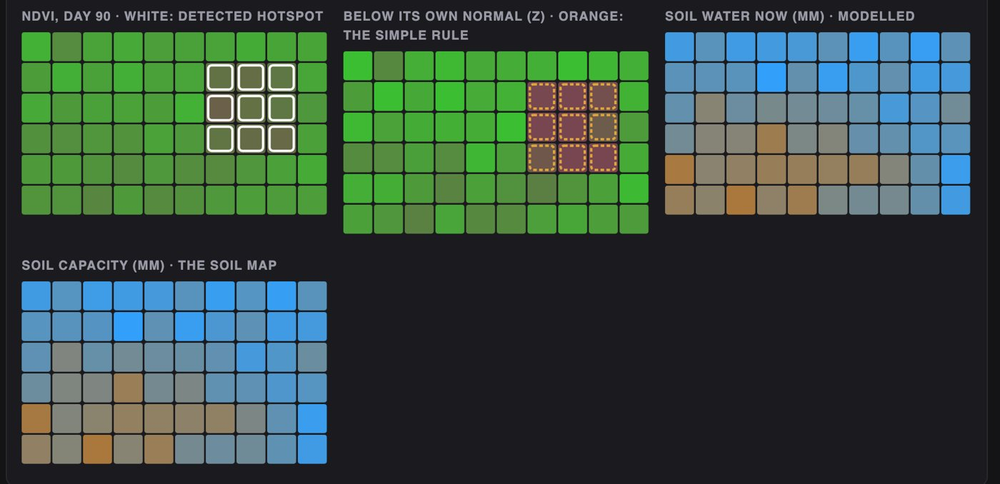
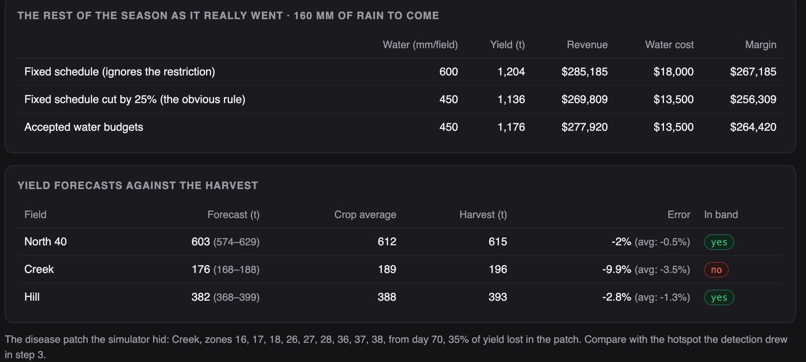

Python · Simulation · Agriculture · 2026-10
Which Patch of the Field Is Sick, and Where Should a Quarter Less Water Go?
A crop intelligence system for a simulated farm: it finds a nine-zone disease patch from satellite images two weeks after it starts and never flags healthy ground, forecasts each field's yield with a band, and under a 25% water restriction spreads the water so the farm keeps $8,000 more margin than cutting every field equally.

Built from a written blueprint as one vertical slice. The farm is simulated: its weather, images, probes and yields come from a generator I wrote, which is what lets every answer be checked against the truth. The soil-water model used for planning is the same one that generated the data, so the planning result is a best case. Prices and the water cost are my assumptions. No language model is used. Not built: real satellite or drone feeds, segmentation models, nutrient plans, map tiles, Kafka, Terraform, single sign-on.
01 — The problem
A farm manager sees satellite images every few days, soil probes in a few spots, and a weather forecast. A patch of disease shows up in the images weeks before the harvest shows it, if someone knows where to look; sandy ground looks a little sick all season and sends scouts for nothing. And when the water district cuts the allocation, the usual answer is to cut every field equally. Can software find the real patch, forecast the harvest honestly, and spend less water where it costs least?
Blueprint 2 of fifteen in a third build book, built as its demo scenario end to end.
02 — What I built
A Python service on PostgreSQL with a background worker and a web page, started by one docker compose up.
- A simulator of a farm season: three fields of 60 one-hectare zones with a soil map, a daily water balance, NDVI images and the yield each zone gives.
- Hotspot detection that compares each zone with the field and with its own normal, beside the obvious NDVI threshold.
- A yield model with a 10–90% band, tested on seasons it never saw.
- An irrigation planner that chooses a water budget per field by simulating sampled weather.
- Recommendations with evidence, inert until an agronomist accepts them.
03 — How it was built
- 01
Sandy ground is not disease
A fixed NDVI threshold flags whatever is low, and the sandy corners of a field are always a little low. The detector instead asks two questions of every zone: how does it compare with the rest of the field today, and how does that compare with its own normal from the early images? Only a zone that has moved against both, on two consecutive images, is flagged, and only clusters of three or more are reported. In 36 field-seasons it never reported anything but the planted patch.
offset = rel[early].mean(axis=0) sigma = max(0.012, float(rel[early].std())) return days, (rel - offset) / sigma - 02
A yield band that is checked, not asserted
The yield model predicts a median and the 10% and 90% points for every zone from the soil map, the images so far and the water balance so far. The evaluation then counts how often the truth fell inside: 72.5% of zones, where 80% would be perfect. The field total is the sum of zone quantiles, which is wider than it should be, and the page says so. On the demo day the model lost to the plain crop average on all three fields; over 36 field-seasons it wins, 1.5% error against 2.1%.
m = {"mean": fit(loss="absolute_error"), "lo": fit(loss="quantile", quantile=0.1), "hi": fit(loss="quantile", quantile=0.9)} - 03
The planner I replaced
The first planner chose a trigger level and a refill share per field. Under a 25% cut it kept watering corn and soybean and let the wheat go dry, and in the replay it lost to a flat cut in two seasons out of three. A trigger rule cannot promise how much water it will use, so the cap did not hold in real weather, and the coarse options offered no middle way. The planner now chooses a water budget per field with a fixed rule for spending it: the cap holds by construction and deficit irrigation across all fields is on the menu.
mm = min(EVENT_MM, left[0], float((cap - sw).mean())) left[0] -= mm - 04
Every combination under the cap, on six futures
Thirteen budgets per field, each played through the soil-water model on six sampled weather futures, then every combination of the three fields that fits under the farm's cap, scored by expected margin. The water goes where a millimetre earns most: 175 mm to corn, 150 to soybean, 125 to wheat. It takes under a second.
if sum(p["budget_mm"] for p in pick) <= cap + 1e-9: profit = sum(p["profit"] for p in pick) - 05
Replayed against the truth
The simulator knows the weather to come, so the rest of the season is played out three ways: the fixed schedule, the fixed schedule cut by a quarter, and the accepted budgets. In the demo the budgets kept 1,176 tonnes against 1,136 for the flat cut with the same water; over twelve seasons on three other farms they won ten times, by 2.4% of margin. It is a best case: the planner's water model is the simulator's own.
for name, rule in rules.items(): water, yld = engine.run(f, truth["et0"][now:], truth["rain"][now:], rule(f["index"]), sw_now[f["index"]], now, SEASON_SEED)
04 — Results
The demo. The soybean field at day 90: the detected patch in white, the simple rule's flags in orange, the modelled soil water and the soil map.
The rest of the season as it really went, and the forecasts against the harvest:

On three other simulated farms, twelve seasons:
| System | Simple | |
|---|---|---|
| Patches found by day 90 | 11 of 12 | – |
| False reports | 0 | 205 images |
| Yield error | 1.5% | 2.1% |
| In the band | 34 of 36 | – |
| Margin, 25% cut | +2.4% | flat cut |
"Simple" is the obvious rule in each case: an NDVI threshold of 0.70, the crop's average yield, and cutting every field's water by a quarter. The false-report count for the threshold is the number of images on which it flagged healthy ground.
Honest limits. Detection waits for two images, so it reports a median 15 days after onset. The yield model beats the crop average only modestly and lost to it on the demo day. The planner's gain is small and is a best case, because its soil-water model is the simulator's own. Real NDVI has clouds, angles and bare soil in it; this generator has noise and nothing else.
Checks. 14 tests, including: the patch is found and nothing else is, a raster of the wrong size or range is refused, a duplicate probe reading stores nothing, a budget rule never exceeds its budget, the plan never exceeds the cap, an analyst cannot accept a recommendation, and one farm business cannot see another's fields.
05 — What I'd do next
- Re-plan as the season moves: new images and weather each week, budgets revised.
- Nitrogen alongside water, since the patch could be a deficiency rather than disease.
- A real raster source with cloud masks and bare-soil correction, to see how much of the detection survives.